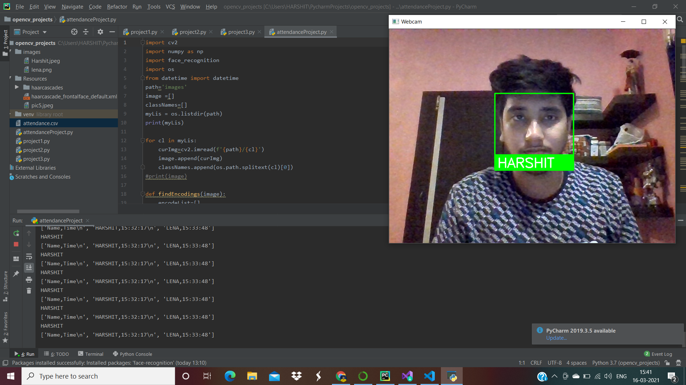

Face-Recognition Attendance-System
It is a Simple openCv application for taking real time attendance. The purpose of this project was to get familiar with OpenCV.
The main task of this project is to perform Facial Recognition and importing present students into excel sheet.
I have used face_recognition library.It finds face and perform facial landmark detection. On passing the test image through pretrained model, 128 measurements of a single image is captured as output.
It includes faceLocations, face encodings.
Finding facial distance plays important role.one having low facial distance, will have high similarity, Hence Recognition done
I worked on this project for 2 days after learning OpenCV basics.
Technologies:
- - Python
- - OpenCV
- - image processing